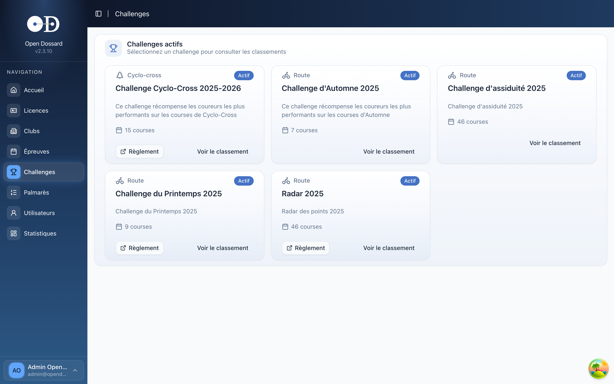
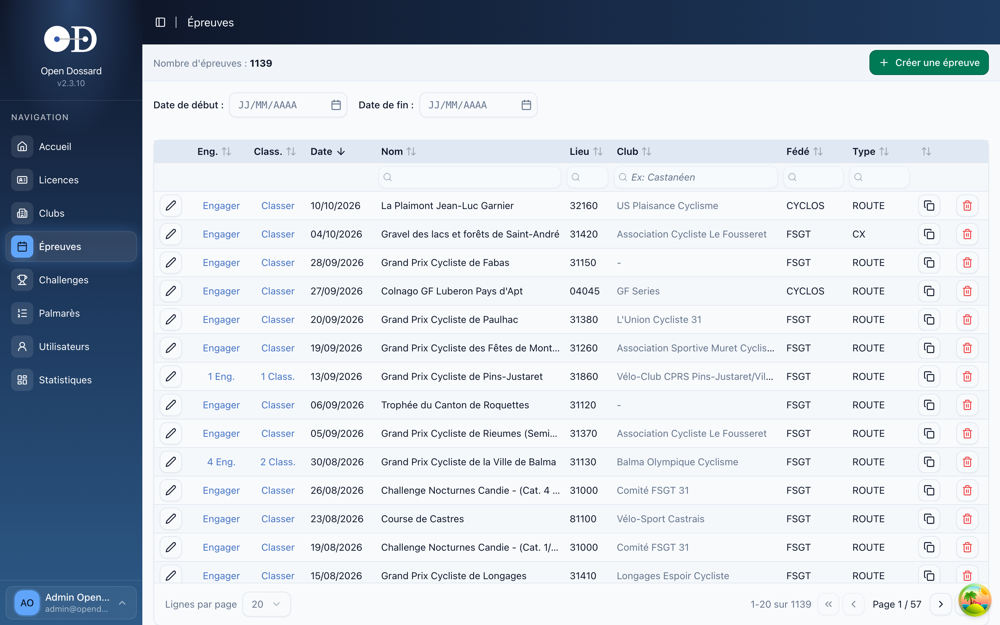
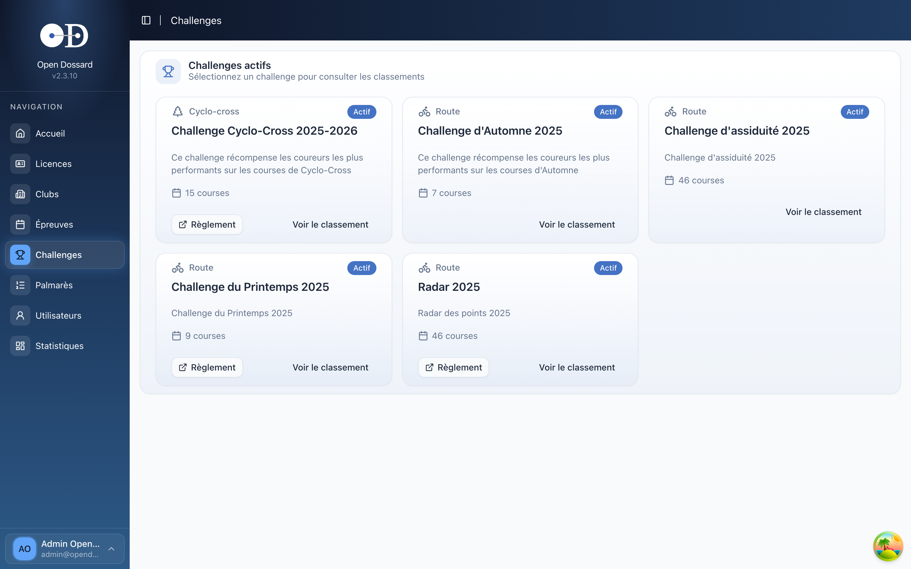
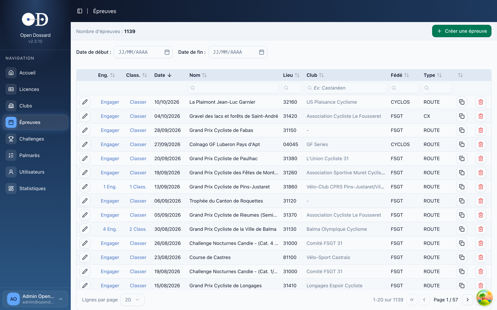

Fonctionnalités
Tout pour gérer vos épreuves
Une plateforme complète pour les organisateurs, commissaires et fédérations.
Dashboard
Vue d'ensemble avec graphiques filtrables en temps réel.
Challenges
Classements multi-barèmes : FSGT 31, cyclo-cross, points, assiduité.
Engagements
Inscription des coureurs avec autocomplete licences et drag-and-drop.
Résultats
Saisie tableur, auto-complétion par dossard, classement automatique.
Palmarès
Historique coureur, stats victoires et podiums, évolution catégorie.
Licences
Base de 15 000+ licenciés, import CSV, multi-fédération.
Clubs
Gestion des clubs, suivi des adhérents et affiliations.
Statistiques
Charts avancés, analyse cross-fédération et pilotage.


 


